Input Nodes
Basic
| Boolean | Color |
|---|---|
| 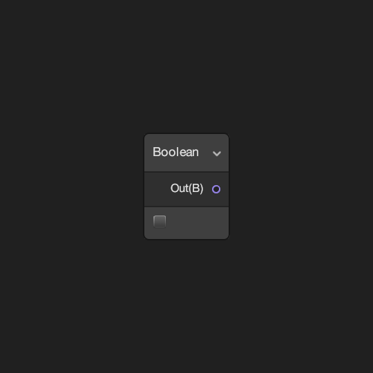 | |
| Defines a constant Boolean value in the shader. | Defines a constant Vector 4 value in the shader using a Color field. |
| Constant | Integer |
 |
|
| Defines a Vector 1 of a mathematical constant value in the shader. | Defines a constant Vector 1 value in the shader using an Integer field. |
| Slider | Time |
 |
|
| Defines a constant Vector 1 value in the shader using a Slider field. | Provides access to various Time parameters in the shader. |
| Vector 1 | Vector 2 |
| 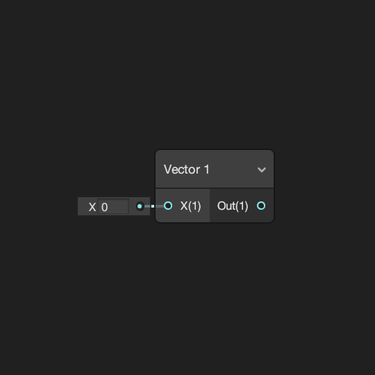 | 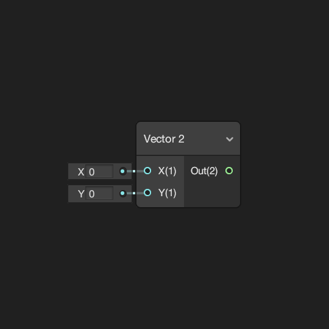 |
| Defines a Vector 1 value in the shader. | Defines a Vector 2 value in the shader. |
| Vector 3 | Vector 4 |
 |
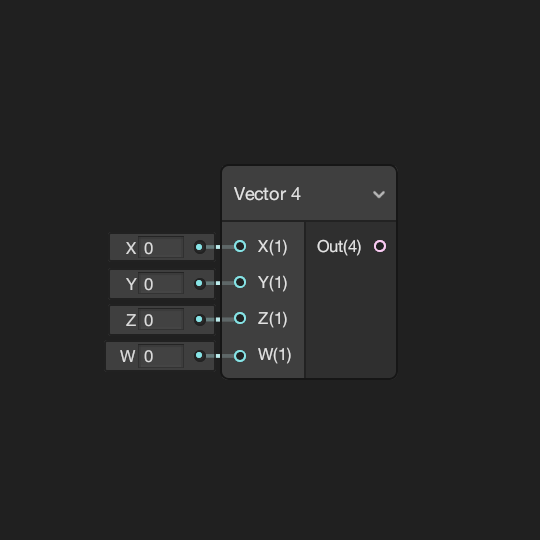 |
| Defines a Vector 3 value in the shader. | Defines a Vector 4 value in the shader. |
Geometry
| Bitangent Vector | Normal Vector |
|---|---|
 |
|
| Provides access to the mesh vertex or fragment's Bitangent Vector. | Provides access to the mesh vertex or fragment's Normal Vector. |
| Position | Screen Position |
| 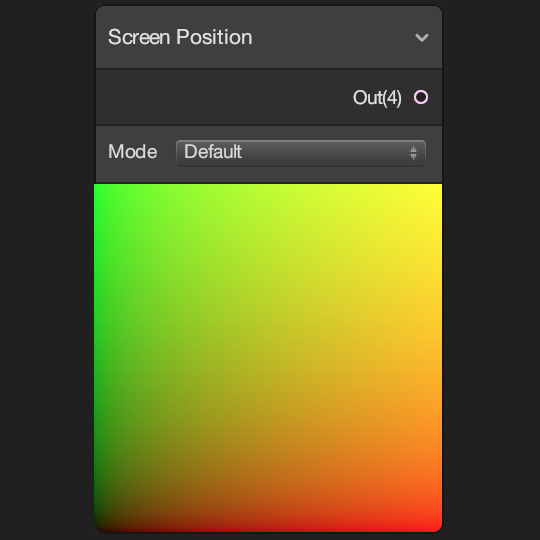 | |
| Provides access to the mesh vertex or fragment's Position. | Provides access to the mesh vertex or fragment's Screen Position. |
| Tangent Vector | UV |
 |
 |
| Provides access to the mesh vertex or fragment's Tangent Vector. | Provides access to the mesh vertex or fragment's UV coordinates. |
| Vertex Color | View Direction |
| Provides access to the mesh vertex or fragment's Vertex Color value. | Provides access to the mesh vertex or fragment's View Direction vector. |
Gradient
| Gradient | Sample Gradient |
|---|---|
| 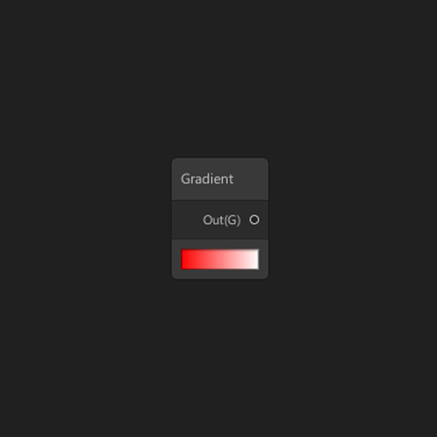 | 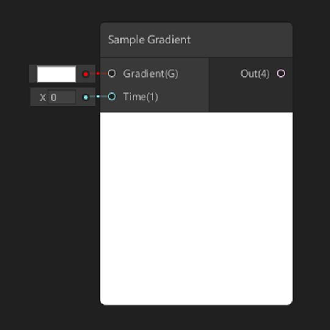 |
| Defines a constant Gradient in the shader. | Samples a Gradient given the input of Time. |
Matrix
| Matrix 2x2 | Matrix 3x3 |
|---|---|
 |
|
| Defines a constant Matrix 2x2 value in the shader. | Defines a constant Matrix 3x3 value in the shader. |
| Matrix 4x4 | Transformation Matrix |
 |
|
| Defines a constant Matrix 4x4 value in the shader. | Defines a constant Matrix 4x4 value for a default Unity Transformation Matrix in the shader. |
PBR
| Dielectric Specular | Metal Reflectance |
|---|---|
 |
|
| Returns a Dielectric Specular F0 value for a physically based material. | Returns a Metal Reflectance value for a physically based material. |
Scene
| Ambient | Camera |
|---|---|
 |
|
| Provides access to the Scene's Ambient color values. | Provides access to various parameters of the current Camera. |
| Fog | Baked GI |
| 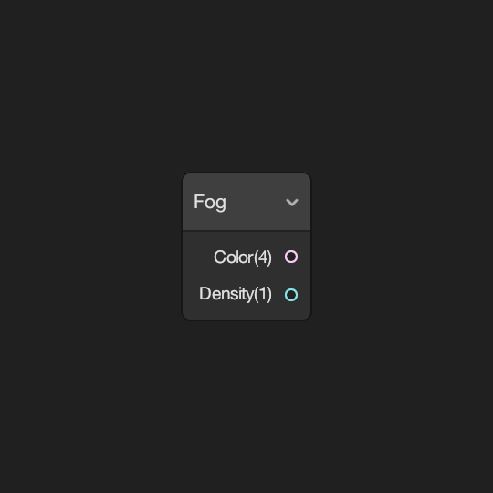 | |
| Provides access to the Scene's Fog parameters. | Provides access to the Baked GI values at the vertex or fragment's position. |
| Object | Reflection Probe |
| 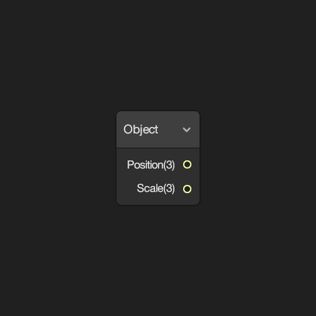 | 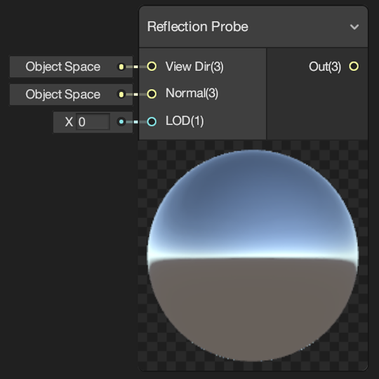 |
| Provides access to various parameters of the Object. | Provides access to the nearest Reflection Probe to the object. |
| Scene Color | Scene Depth |
 |
 |
| Provides access to the current Camera's color buffer. | Provides access to the current Camera's depth buffer. |
| Screen | |
 |
|
| Provides access to parameters of the screen. |
Texture
| Cubemap Asset | Sample Cubemap |
|---|---|
 |
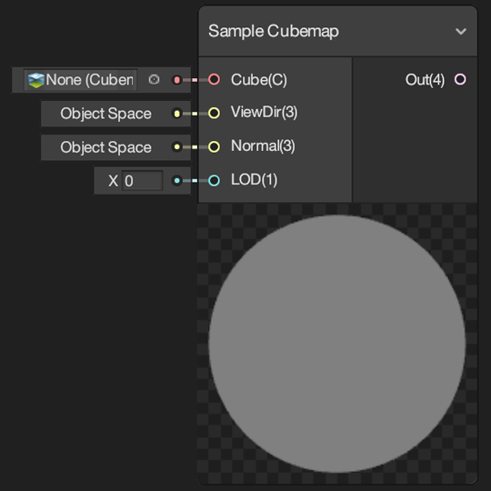 |
| Defines a constant Cubemap Asset for use in the shader. | Samples a Cubemap and returns a Vector 4 color value for use in the shader. |
| Sample Texture 2D | Sample Texture 2D Array |
 |
 |
| Samples a Texture 2D and returns a color value for use in the shader. | Samples a Texture 2D Array at an Index and returns a color value for use in the shader. |
| Sample Texture 2D LOD | Sample Texture 3D |
 |
|
| Samples a Texture 2D at a specific LOD and returns a color value for use in the shader. | Samples a Texture 3D and returns a color value for use in the shader. |
| Sampler State | Texel Size |
 |
 |
| Defines a Sampler State for sampling textures. | Returns the Width and Height of the texel size of Texture 2D input. |
| Texture 2D Array Asset | Texture 2D Asset |
 |
|
| Defines a constant Texture 2D Array Asset for use in the shader. | Defines a constant Texture 2D Asset for use in the shader. |
| Texture 3D Asset | |
| 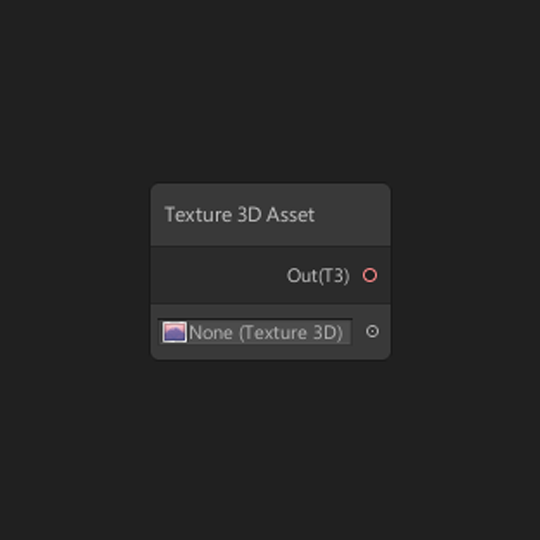 | |
| Defines a constant Texture 3D Asset for use in the shader. |